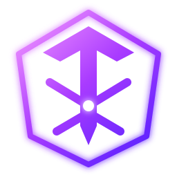

ᛏᚱᚨᛟ

KADİM DİYAR UYANIYOR
TORA ONLINE
Kadim Tora diyarına adım at. Kılıcını kuşan, yaratıklarla savaş ve kendi efsaneni yaz.
KLAVYE & FAREKONTROLLER+
WASD HareketSHIFT KoşSPACE Zıpla1–9 YetenekI EnvanterC StatlarSOL TIK Yürü / hedefleSAĞ SÜRÜKLE KameraTAB Hedef değiştirESC Menü
Giriş bekleniyor.
TÜRACTION MMORPGMODOFFLINE PROTOTİPMOTORBABYLON.JS